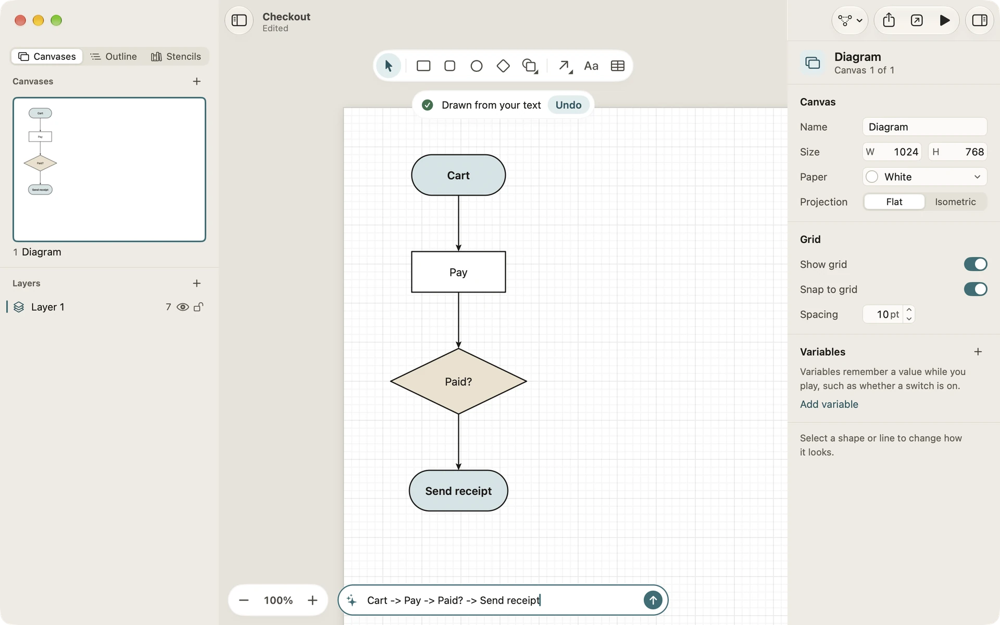
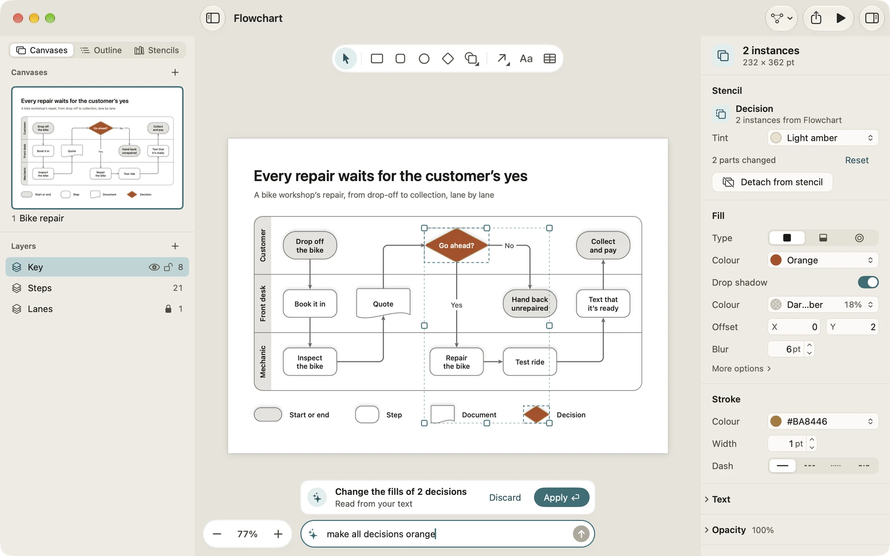

The prompt bar
The prompt bar sits at the bottom of every canvas. Type a few steps and it draws them as boxes and arrows, laid out for you; ask for a change and it makes it on the diagram in front of you. Everything it does runs on your Mac or iPad.
Draw from steps
On an empty canvas the bar says “Describe a diagram, or type A -> B -> C”. Write the steps rather than describe the picture:
- Steps joined by arrows:
Idea -> Plan -> Build -> Ship - Steps written as a sentence: “Sign up, confirm your email, then log in”
- A bulleted or indented list, one item a line, which becomes a tree of topics. Paste it into the bar.
Press Return on the Mac, or tap the arrow on iPad. Diagrove draws a box for each step, joins them with arrows and lays them out. A step that ends with a question mark, such as Paid?, becomes a decision. To label an arrow, write Paid? -[yes]-> Send receipt. A notice says the diagram was drawn, with Undo if it isn’t what you wanted.
This works with or without Apple Intelligence.

Draw from a description
With Apple Intelligence on, you can describe a diagram in your own words: “Draw a flowchart for returning an order” or “Draw a mind map about planning a trip”. Diagrove works out the steps on the device, then draws and lays them out the same way. On the Mac, File › Describe a diagram… (Option-Shift-Command-N) opens a new document with the bar ready and an example to follow; on iPad, Describe a diagram… is in the template sheet.
Change a diagram in words
Once there’s something on the canvas, the bar says “Ask for a change, or type A -> B -> C”. Name what to change by its words, or by a kind such as decisions, notes, steps or lines:
- “Make all decisions orange”
- “Rename Cart to Basket”
- “Add a step after Pay called Fraud check”
- “Connect Try again to Cart”
- “Move Try again below Send receipt”
- “Change 2% to 3%”
- “Delete the notes”
- “Auto-arrange the diagram”
Or select graphics first and say what to do with them: “Make it orange”, “Make them 50% wider”, “Align them left”, “Make it bold”, “Rename it to Payment”, “Space them out evenly” or “Group them”.
Every example here works without Apple Intelligence. With it on, changes worded in other ways work too: Diagrove asks the on-device model what you meant, then makes only the kinds of change you asked for.
The change on show
A change isn’t made straight away. It shows on the canvas first, with a card above the bar that says what changed and, for a change of several parts, Show changes to list them.
- Apply (Return) makes it, as one step you can undo.
- Discard (Esc) puts everything back as it was, the selection included.
Any other edit, a click on the canvas, switching canvas or starting Play drops a change on show, as Discard does.
When Diagrove can’t work out part of a request, it says what it read and which words it couldn’t, so you can say it another way. A request that asks for no change it knows, such as “make it sparkle”, changes nothing.

The guide
The sparkle at the start of the prompt bar opens What you can ask, the prompt bar guide, in the column where the inspector goes. Help › What you can ask the prompt bar opens it too. It lists what the bar understands in four groups: Change what’s selected, Change graphics by name, Auto-arrange and Draw a new diagram. Click an example (tap on iPad) and it goes into the bar with its name highlighted, so you can type your own over it, then press Return (tap the arrow on iPad).
The guide opens with the first document window each time Diagrove starts. Choose Don’t show again at its foot to stop that; the notice that follows has Undo. On the Mac, Diagrove › Settings… has the switch Show the prompt bar guide when Diagrove opens, to turn it back on later.
What needs Apple Intelligence
| Without Apple Intelligence | With it | |
|---|---|---|
| Steps with arrows, in a sentence or as a list | Yes | Yes |
| The changes the guide lists | Yes | Yes |
| A diagram described in your own words | No | Yes |
| Changes worded in other ways | Only the parts Diagrove’s own reader understands | Yes |
When Apple Intelligence is off, the bar says so as you click into it, and the guide leaves out the examples that need it.
Limits
- The prompt bar draws boxes and arrows. For posters, infographics or charts, start from a template or add stencils, then ask for changes. See Templates and Stencils and tints.
- Locked graphics, and graphics on locked or hidden layers, aren’t changed; the message says so.
- It doesn’t work while you play a diagram.
Privacy
The prompt bar runs on the device, with Apple’s on-device model when Apple Intelligence is on and Diagrove’s own reader of English requests either way. Nothing you type is sent anywhere, and there’s no account. For what Diagrove does and doesn’t do with your data, see the privacy policy.
Related
- Outline and auto-layout: Auto-arrange, Tidy and the layouts the prompt bar uses.
- Getting started: the parts of a window.